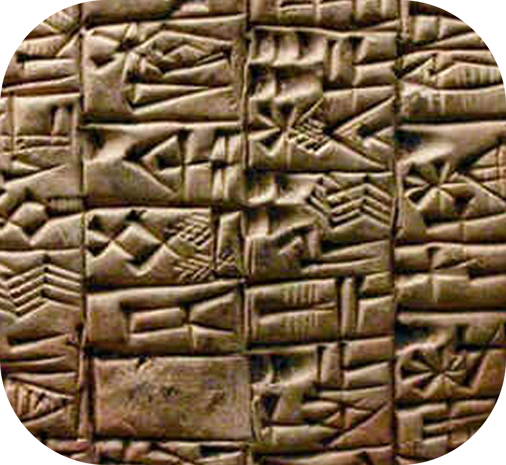
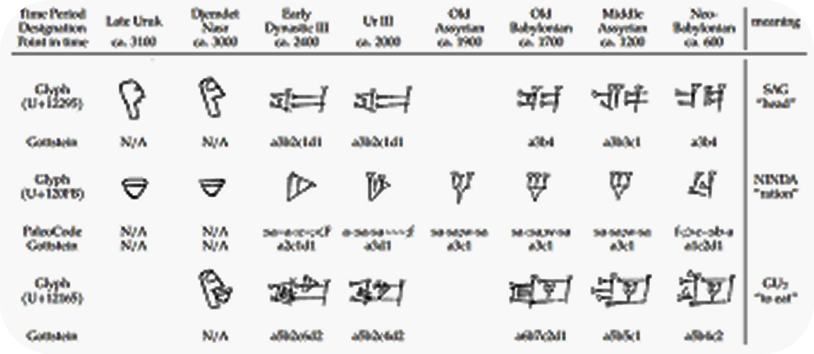
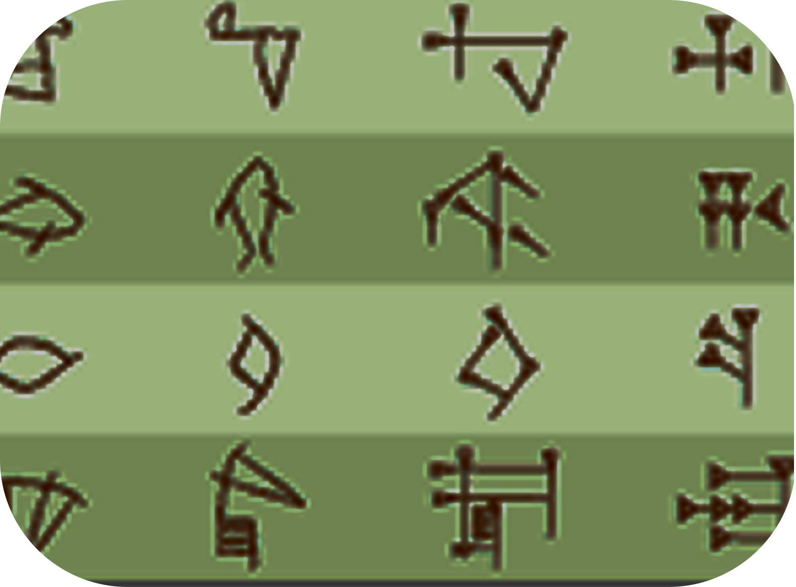
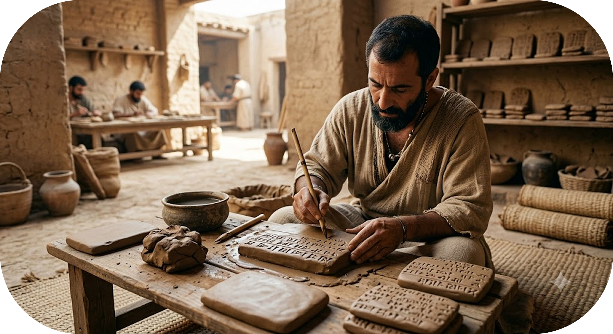
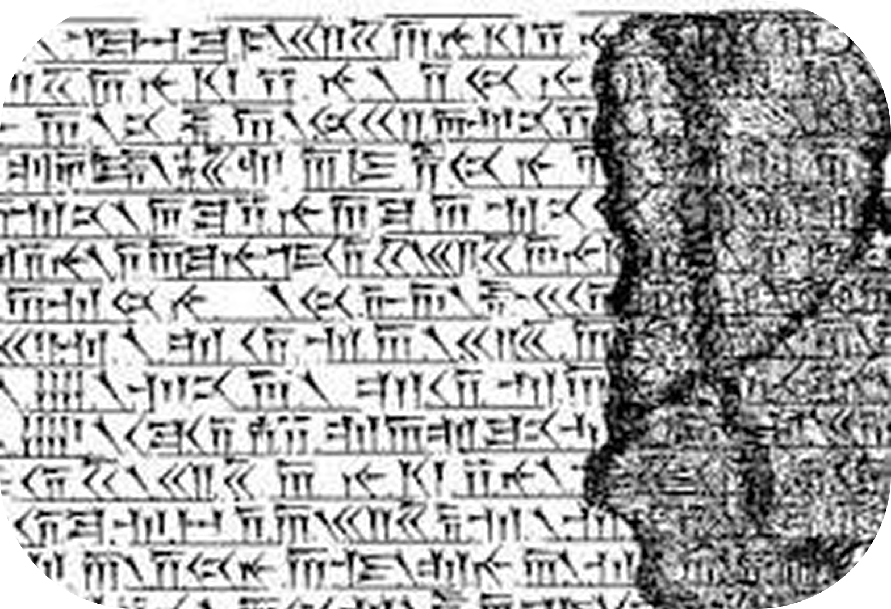

Descubra a Escrita:
Cuneiforme
- Suméria, 3200 a.C
A escrita cuneiforme não nasceu para registrar poesias ou narrativas artísticas. Ela surgiu no sul da Mesopotâmia, na antiga cidade de Uruk, por uma necessidade estritamente burocrática, fiscal e comercial. O crescimento acelerado das primeiras cidades-estado exigia um controle rigoroso de recursos que a memória humana já não conseguia gerenciar sozinha.

O sistema foi desenvolvido para registrar a contabilidade de templos, impostos, rebanhos e estoques de grãos pela civilização suméria. Os escribas gravavam os sinais em placas de argila úmida com um estilete de junco chamado cálamo. O nome cuneiforme vem do latim cuneus, que significa cunha, pois a ponta do estilete deixava sulcos com o formato triangular de uma cunha na argila mole.

A Evolução do Sistema:
A escrita cuneiforme passou por uma profunda transição estrutural ao longo dos séculos, deixando de ser meramente visual para se tornar abstrata.
-
Fase Pictográfica
Os primeiros registros consistiam em desenhos literais de objetos cotidianos. Se o escriba quisesse registrar um boi ou um vaso de cerâmica, ele desenhava o contorno exato do animal ou do objeto na argila mole.
-
Fase Ideográfica e Abstrata
Para aumentar a rapidez dos registros, os escribas abandonaram as curvas detalhadas. Começaram a pressionar o estilete de forma padronizada, criando linhas retas e traços triangulares. Os desenhos passaram a representar também conceitos abstratos ligados àquela imagem.

-
Fase Fonográfica (Silábica)
A grande virada ocorreu quando os símbolos começaram a representar sons e sílabas da fala, e não apenas imagens de objetos físicos. Isso permitiu registrar nomes próprios, sentimentos e formular orações gramaticais completas, tornando o sistema adaptável para outros idiomas da região.

O Processo Técnico: Como Eles Escreviam?
A Argila e o Junco: A confecção das tabuletas dependia inteiramente da natureza local. Os escribas moldavam pequenas placas de argila úmida colhida nas margens dos rios Tigre e Eufrates. Utilizando um estilete de junco com a ponta cortada em formato triangular, eles pressionavam a superfície criando traços em forma de cunha (daí o nome cuneiforme). Depois de prontas, as placas secavam ao sol ou eram cozidas em fornos para virarem "pedra".

O Fim e o Resgate Arqueológico
O uso da escrita cuneiforme diminuiu com a chegada de alfabetos mais simples e práticos (como o fenício), que usavam cerca de 20 a 30 letras em vez de centenas de sinais. Por volta do século I d.C., os últimos registros foram feitos e o segredo de como lê-los ficou enterrado na areia por quase dois mil anos.

Behistun Inscription cuneiform
O código só foi decifrado no século XIX, graças à Inscrição de Behistun, um enorme texto gravado em um penhasco no Irã. Ela trazia a mesma mensagem escrita em três línguas antigas diferentes usando o cuneiforme. Foi a "chave mestra" que permitiu aos cientistas traduzirem os milhares de blocos de argila encontrados em escavações, devolvendo a voz aos povos da Mesopotâmia.
Você Sabia? A escrita cuneiforme não era um idioma, mas sim um sistema de escrita. Da mesma forma que o nosso alfabeto atual serve para escrever em português, inglês ou espanhol, a escrita cuneiforme foi usada para escrever várias línguas diferentes da época, como o sumério, o acádio, o babilônio e o hitita.